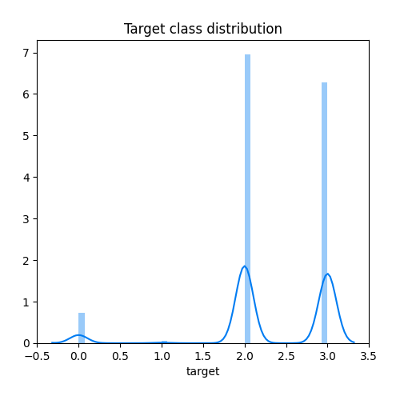
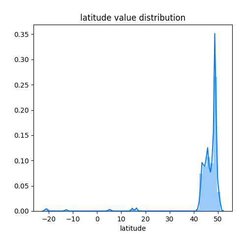
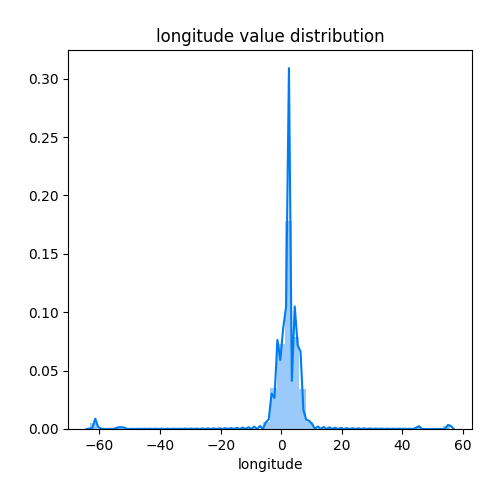
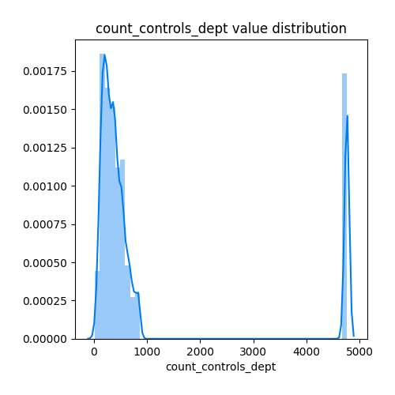
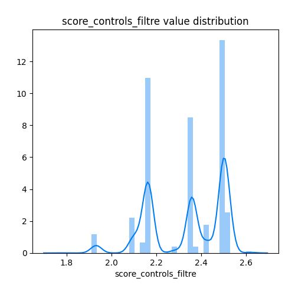
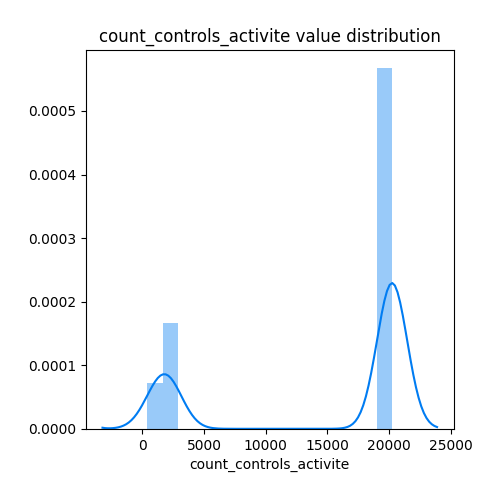
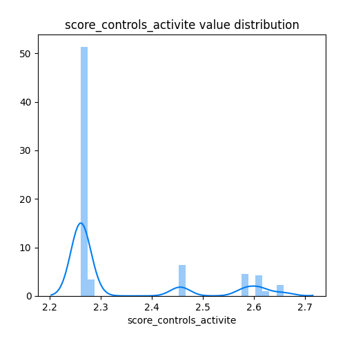
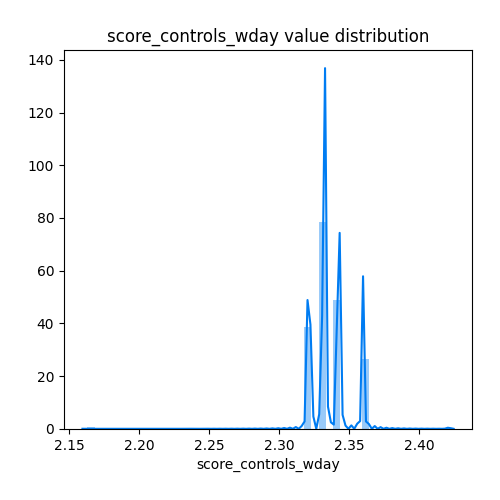

Exploratory Data Analysis
<< Go back
Feature : target
- Feature type : discrete
- Missing : 0.0%
- Unique : 4
- Count :21606.0
- Mean :2.3399518652226234
- Std :0.7380319830812934
- Min :0.0
- 25%th Percentile : 2.0
- 50%th Percentile : 2.0
- 75%th Percentile : 3.0
- Max :3.0

Feature : filtre
- Feature type : discrete
- Missing : 0.0%
- Unique : 20
- Count :21606.0
- Mean :11.784087753401833
- Std :5.819898868184911
- Min :0.0
- 25%th Percentile : 7.0
- 50%th Percentile : 11.0
- 75%th Percentile : 17.0
- Max :19.0

Feature : latitude
- Feature type : continous
- Missing : 2.4715356845320744%
- Unique : 18216
- Count :21072.0
- Mean :45.94928890942482
- Std :7.760093289264238
- Min :-21.383353
- 25%th Percentile : 45.133563
- 50%th Percentile : 47.6894995
- 75%th Percentile : 48.86117125
- Max :51.078994

Feature : longitude
- Feature type : continous
- Missing : 2.4715356845320744%
- Unique : 18253
- Count :21072.0
- Mean :1.801410175920653
- Std :9.391063240668975
- Min :-63.085432
- 25%th Percentile : 0.6367407500000001
- 50%th Percentile : 2.3494669999999998
- 75%th Percentile : 4.157437
- Max :55.791227

Feature : has_agrement
- Feature type : discrete
- Missing : 0.0%
- Unique : 2
- Count :21606.0
- Mean :0.32037397019346475
- Std :0.4666310827447254
- Min :0.0
- 25%th Percentile : 0.0
- 50%th Percentile : 0.0
- 75%th Percentile : 1.0
- Max :1.0

Feature : dept
- Feature type : discrete
- Missing : 0.0%
- Unique : 97
- Count :21606.0
- Mean :55.441729149310376
- Std :27.37644532647023
- Min :0.0
- 25%th Percentile : 32.0
- 50%th Percentile : 62.0
- 75%th Percentile : 75.0
- Max :96.0

Feature : year
- Feature type : discrete
- Missing : 0.0%
- Unique : 2
- Count :21606.0
- Mean :2020.1345459594556
- Std :0.3412458555027643
- Min :2020.0
- 25%th Percentile : 2020.0
- 50%th Percentile : 2020.0
- 75%th Percentile : 2020.0
- Max :2021.0

Feature : month
- Feature type : discrete
- Missing : 0.0%
- Unique : 12
- Count :21606.0
- Mean :6.604091456077016
- Std :3.345446312610856
- Min :0.0
- 25%th Percentile : 5.0
- 50%th Percentile : 7.0
- 75%th Percentile : 9.0
- Max :11.0

Feature : weekday
- Feature type : discrete
- Missing : 0.0%
- Unique : 7
- Count :21606.0
- Mean :1.9918541145977968
- Std :1.2884146564554377
- Min :0.0
- 25%th Percentile : 1.0
- 50%th Percentile : 2.0
- 75%th Percentile : 3.0
- Max :6.0

Feature : count_controls_dept
- Feature type : discrete
- Missing : 0.0%
- Unique : 92
- Count :21606.0
- Mean :1083.8292141071925
- Std :1641.8635605283664
- Min :17.0
- 25%th Percentile : 232.0
- 50%th Percentile : 372.0
- 75%th Percentile : 637.0
- Max :4760.0

Feature : score_controls_dept
- Feature type : continous
- Missing : 0.0%
- Unique : 97
- Count :21606.0
- Mean :2.336828435431701
- Std :0.19963573851113006
- Min :1.626865671641791
- 25%th Percentile : 2.264367816091954
- 50%th Percentile : 2.3283613445378153
- 75%th Percentile : 2.4829545454545454
- Max :2.7955801104972378

Feature : count_controls_filtre
- Feature type : discrete
- Missing : 0.0%
- Unique : 20
- Count :21606.0
- Mean :6143.249745441081
- Std :3101.004863738982
- Min :12.0
- 25%th Percentile : 5613.0
- 50%th Percentile : 7540.0
- 75%th Percentile : 9095.0
- Max :9095.0

Feature : score_controls_filtre
- Feature type : continous
- Missing : 0.0%
- Unique : 20
- Count :21606.0
- Mean :2.336000632870056
- Std :0.16575757073729716
- Min :1.7692307692307692
- 25%th Percentile : 2.163660477453581
- 50%th Percentile : 2.359166221272047
- 75%th Percentile : 2.500934579439252
- Max :2.625

Feature : count_controls_activite
- Feature type : discrete
- Missing : 0.0%
- Unique : 7
- Count :21606.0
- Mean :14776.863232435435
- Std :8456.663623895276
- Min :405.0
- 25%th Percentile : 2508.0
- 50%th Percentile : 20257.0
- 75%th Percentile : 20257.0
- Max :20257.0

Feature : score_controls_activite
- Feature type : continous
- Missing : 0.0%
- Unique : 7
- Count :21606.0
- Mean :2.335601108939521
- Std :0.13315211521442855
- Min :2.2606012736338057
- 25%th Percentile : 2.2606012736338057
- 50%th Percentile : 2.2606012736338057
- 75%th Percentile : 2.456140350877193
- Max :2.658333333333333

Feature : count_controls_wday
- Feature type : discrete
- Missing : 0.0%
- Unique : 7
- Count :21606.0
- Mean :6170.645931685643
- Std :1602.2933419299443
- Min :38.0
- 25%th Percentile : 3941.0
- 50%th Percentile : 7271.0
- 75%th Percentile : 7781.0
- Max :7781.0

Feature : score_controls_wday
- Feature type : continous
- Missing : 0.0%
- Unique : 7
- Count :21606.0
- Mean :2.3360465320500445
- Std :0.015112262409993957
- Min :2.1627906976744184
- 25%th Percentile : 2.3314534734683416
- 50%th Percentile : 2.332605063616502
- 75%th Percentile : 2.3424563333791775
- Max :2.4210526315789473

<< Go back